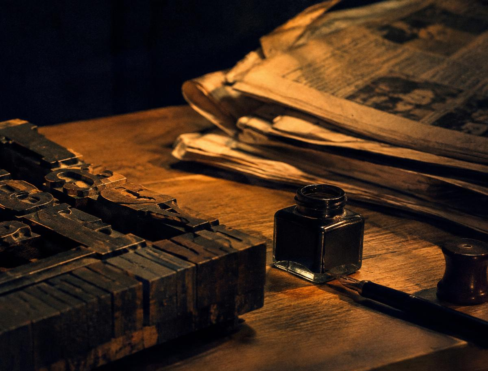
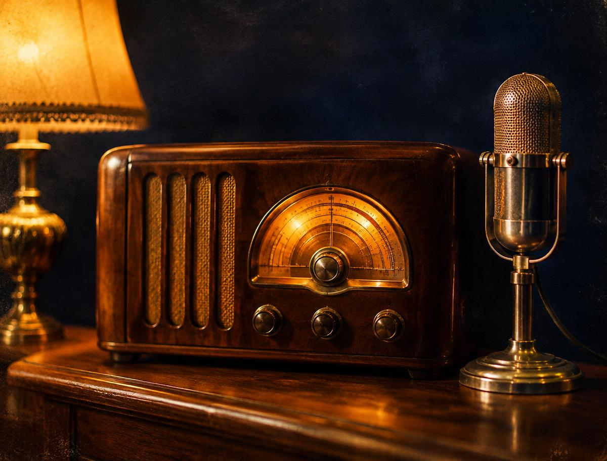
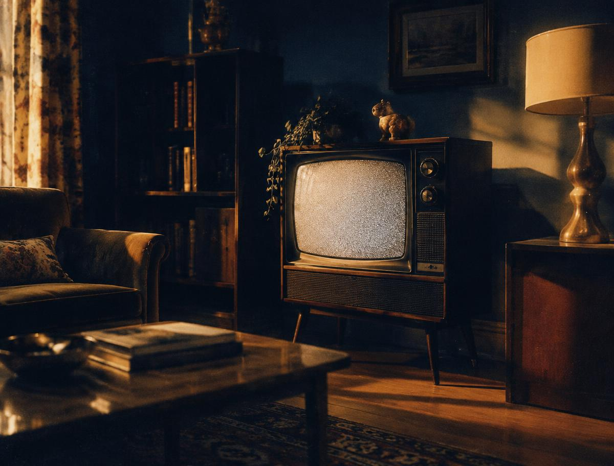
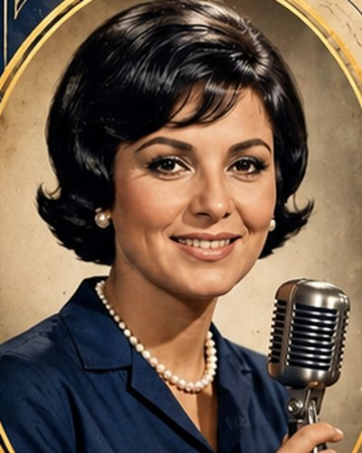

1828
الصحافة المصرية
هنا تبدأ الحكاية الأولى: الكلمة المطبوعة. نتتبع في هذه المحطة بدايات الصحافة المصرية وكيف أصبحت نافذة للمعرفة والرأي عبر الأجيال.
أرشيف رقمي لتاريخ الإعلام المصري
رحلة في تاريخ الإعلام المصري... من أول صحيفة إلى عصر الذكاء الاصطناعي
منصة رقمية توثق حكايات الصحافة والإذاعة والتلفزيون المصري، وتعيد اكتشاف الشخصيات والأصوات التي صنعت تاريخ الإعلام.
عن المنصة
حدوتة إعلامية منصة رقمية تهدف إلى توثيق تاريخ الإعلام المصري، وتسليط الضوء على أهم مراحله وشخصياته المؤثرة، بداية من الصحافة المصرية، مرورًا بالإذاعة والتلفزيون، وصولًا إلى التحولات الرقمية والذكاء الاصطناعي.
المحطات الكبرى

هنا تبدأ الحكاية الأولى: الكلمة المطبوعة. نتتبع في هذه المحطة بدايات الصحافة المصرية وكيف أصبحت نافذة للمعرفة والرأي عبر الأجيال.

صوت يدخل كل بيت. محطة نستعيد فيها بداية البث الإذاعي المصري، والعبارة التي ارتبطت به في الذاكرة: «هنا القاهرة».

حين أصبحت الصورة جزءًا من الحكاية. نستكشف بداية التلفزيون المصري ودور مبنى ماسبيرو في صناعة الذاكرة المرئية.
التواريخ الواردة في هذا الخط الزمني جزء من محتوى المشروع، وتخضع للمراجعة والتوثيق التاريخي قبل النشر النهائي.
من الأرشيف
ملفات تحريرية تروي فصول الإعلام المصري، فصلًا بعد فصل.
«هنا القاهرة»
عن بداية البث الإذاعي المصري، والعبارة التي صارت عنوانًا لصوت مصر.
بدايات الصحافة المصرية وتطورها عبر المراحل المختلفة.
بداية التلفزيون المصري عام 1960، ودور مبنى ماسبيرو.
كيف تطورت أدوات الإنتاج والتقديم الإعلامي حتى عصر التقنيات الرقمية.
رموز الإعلام المصري


تكريم وتوثيق
صوت أنيق، حضور راقٍ، إرث خالد
نستعيد حكايات الإعلاميات اللاتي تركن بصمة في تاريخ الإذاعة والتلفزيون المصري، وأسهمن في تشكيل الذاكرة الإعلامية.


ذاكرة بصرية
تطور الوسيلة
تتغير أدوات الإعلام وتتطور وسائله، لكن تظل الحكاية الإنسانية هي جوهر كل رسالة.
الكلمة المكتوبة أول جسر بين الخبر والقارئ.
الصوت يعبر المسافات ويصل إلى كل بيت.
الصورة تنضم إلى الصوت، وتولد ذاكرة مرئية.
منصات تفاعلية تجعل الجمهور شريكًا في الحكاية.
أدوات جديدة للإنتاج والتقديم، والحكاية تبقى إنسانية.
رسالتنا
حفظ المراحل والمحطات المهمة في تاريخ الصحافة والإذاعة والتلفزيون.
تسليط الضوء على النساء اللاتي ساهمن في صناعة الذاكرة الإعلامية المصرية.
تقديم التراث الإعلامي بأسلوب رقمي حديث يناسب الأجيال الجديدة.
تابع حدوتة إعلامية
تابعونا لاكتشاف المزيد من الحكايات والشخصيات والمحطات التي صنعت تاريخ الإعلام المصري.
1828
تبدأ رحلة «حدوتة إعلامية» من الكلمة المطبوعة. ففي هذه الحكاية نتتبع بدايات الصحافة المصرية، كما يحددها المشروع بعام 1828، ونرصد كيف تطورت الصحافة لتصبح مساحة للمعرفة والرأي والتأثير في المجتمع.
31 مايو 1934
«هنا القاهرة»
عبارة قصيرة صارت جزءًا من ذاكرة المصريين. في هذه الحكاية نعود إلى بداية البث الإذاعي المصري، ونستمع إلى الصوت الذي دخل البيوت وصار رفيقًا يوميًا للناس.
1960
حين انضمت الصورة إلى الصوت بدأ فصل جديد في حكاية الإعلام المصري. نستكشف في هذه الحكاية بداية التلفزيون المصري عام 1960، ودور مبنى ماسبيرو بوصفه بيتًا للإذاعة والتلفزيون وذاكرة مرئية لأجيال متعاقبة.
من الميكروفون الأول إلى أدوات الذكاء الاصطناعي، تغيرت طرق إنتاج المحتوى الإعلامي وتقديمه. تتناول هذه الحكاية تطور أدوات الإعلام من البث التقليدي إلى التقنيات الرقمية الحديثة.